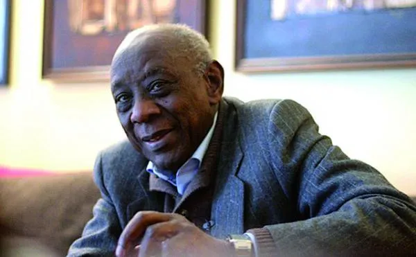
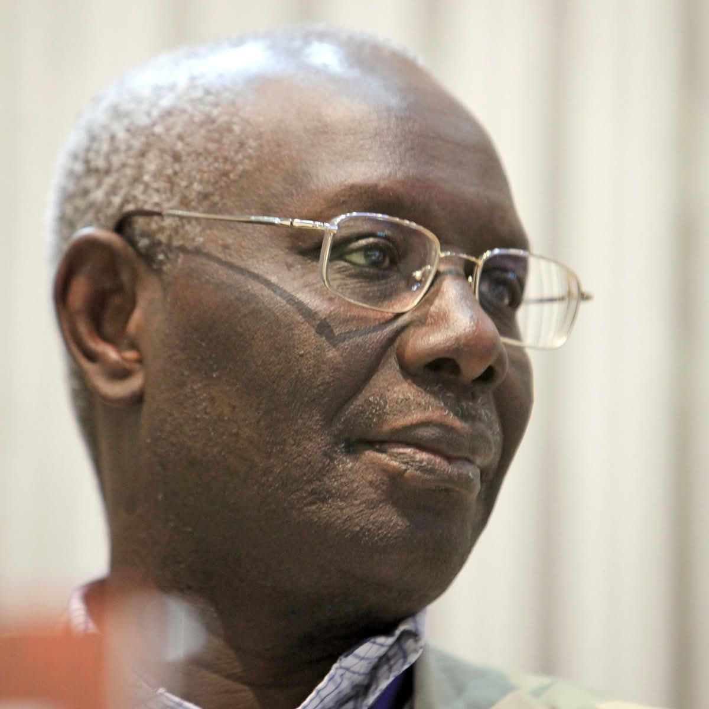

Voix Littéraires du Sénégal
Portraits poétiques et citations inspirantes
Portraits poétiques et citations inspirantes

Fille de l’île de Niodior, Fatou Diome a fait de l’exil une matière première pour ses récits. Ses mots naviguent entre les rives de l’Afrique et de l’Europe, tissant des ponts fragiles entre mémoire et identité.
"🌺L’exil n’est pas une terre, c’est un état d’âme.🌺"
"🌺Il arrive qu'un individu devienne le centre de votre vie, sans que vous ne soyez lie a lui ni par le sang ni par l'amour mais simplement parce qu'il vous tient la main vous aide a marcher sur le fils de l'espoir, sur la ligne tremblante de l'existence.🌺"
Mariama Bâ, voix ardente des femmes africaines, a transformé la douleur en parole et la parole en combat. Une si longue lettre est une confession intime, une révolte douce mais ferme contre les chaînes de la tradition.
"🌺La femme doit être l’égale de l’homme, non son esclave.🌺"
"🌺L'amitie a des grandeurs inconnues de l'amour.Elle se fortifie dans les difficultes, alors que les contraintes massacrent l'amour.🌺"

Journaliste et romancière, Faty Dieng scrute les silences de la société. Dans Chambre 7, elle entrouvre les portes de l’univers carcéral, révélant les vies suspendues derrière les murs.
"🌺Écrire, c’est donner une voix à ceux qu’on n’entend pas.🌺"
"🌺Connaitre pour comprendre, comprendre pour pardonner et pardonner pour se soulager, pardonner pour etre libre et pour etre heureux.🌺"

Première grande romancière du Sénégal, Aminata Sow Fall a fait de la littérature un miroir des injustices. La Grève des battu est une fresque où les mendiants deviennent les héros d’une dignité retrouvée.
"🌺La littérature est une arme pour dénoncer l’injustice.🌺"
"🌺Vouloir garder son integrite morale, refuser de participer au mensonge social, est un risque sur de se voir considerer comme un element marginal.🌺"
Ken Bugul est une ecrivaine senegalaise reconnue pour ses recits autobiographiques explorant l'identite, la marginalite et les experiences feminines en Afrique.
"🌺Appartenir a une societe a laquelle il fallait se plier sans amertune n'excluait pas d'eprouver des sentiments .🌺"
"🌺Rester soi-meme, avec l'energie du desespoir et imposer son identite, peu importait laquelle d'ailleurs, jusqu'a la destruction total du gene de la betise.🌺"

Docker, écrivain, cinéaste, Ousmane Sembène est le griot moderne de l’Afrique. Ses romans et ses films sont des tambours qui résonnent contre le colonialisme et l’oppression.
"🌺La culture est l’arme la plus puissante pour libérer un peuple.🌺"
"🌺Quand on sait que la vie et le courage des autres dependent de votre vie et de votre courage, on n'a plus le droit d'avoir peur.🌺"

Abdoulaye Sadji, instituteur et romancier, a peint les couleurs de la société coloniale avec tendresse et lucidité. Dans Maïmouna, il raconte l’innocence confrontée aux réalités du monde.
"🌺La dignité africaine se reconquiert par l’éducation.🌺"
"🌺Le monde n'etait jamais en equilibre, sa fin approchait a en juger par la depravation des moeurs, le manque de vergogne de la femme et la lachete des hommes.🌺"

Jeune prodige des lettres, Mbougar Sarr a conquis le monde avec La plus secrète mémoire des hommes. Ses mots interrogent la mémoire, l’héritage et la puissance de l’écriture.
"🌺La littérature est ce qui reste quand tout s’efface.🌺"
"🌺La vi n'est rien d'autre que le trait d'union du mot peut-etre. Je tente de marcher sur ce mince tiret. Tant pis s'il cede sous mon poids: je verrai alors ce qui vit ou est creve en dessous.🌺"

Cheikh Hamidou Kane est l’auteur du roman culte L’Aventure ambiguë, méditation sur la rencontre des cultures et la quête d’identité. Il incarne la voix des générations déchirées entre héritage et modernité.
«🌺Nous avons perdu l’âme de nos ancêtres, et nous n’avons pas encore trouvé celle qui doit la remplacer.🌺»
"🌺L'ecole apprend aux hommes seulement a lier le bois au bois pour faire des edifices de bois.🌺"

Leopold Sedar Senghor est un poete, homme politique senegalais, premier president du Senegal et grand defenseur du mouvement de la negritude.
"🌺La negritude est l'ensemble des valeurs culturelles du
monde noir.🌺"
"🌺La civilisation de l'universel ne sera pas une civilisation uniforme, mais une symphonie ou chaque peuple apportera sa note.🌺"

Boubacar Boris Diop est un ecrivain et journaliste senegalais connu pour ses romans et essais engages sur l'histoire, la memoire et les defis de l'Afrique contemporaine.
"🌺Etre noir et africain reste une circonstance aggravante.🌺"
"🌺Notre existence est breve, elle est un chapelet d'illusions qui crevent comme des petites bulles dans nos entrailles.🌺"